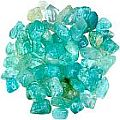

Clorexidina
Um poderoso bactericida e enxaguatório bucal convencional para uso ocasional e emergencial
CuraDente geralmente recomenda apenas métodos naturais e holísticos para tratar e cuidar de dentes e gengivas. Eis aqui uma exceção – pequena maravilha alopática que trabalha com o sedutor nome (genérico) de clorexidina, que basicamente cria um ambiente quase totalmente livre de germes em sua boca – por algum tempo...
Que é a Clorexidina?
A clorexidina é um antisséptico químico poderoso de “largo espectro” contra bactérias Gram-positivas, Gram-negativas, aeróbicas e anaeróbicas, com maior atividade para com os germes Gram-positivos do que os Gram-negativos. É geralmente vendido como soluções a 0,12% e 0,2%, como enxaguatório bucal e também está disponível como um gel.
Extraordinariamente (e de grande ajuda), a razão típica para se evitar preparados químicos em sua pele (ou mucosa nesse caso) – o fato de que alguma da mistura vir a penetrar em sua corrente sanguínea e corpo onde terá de ser desintoxicada pelo seu fígado que muito trabalha, etc - não se aplica à clorexidina. Embora ela adira aos dentes e à mucosa oral durante longo tempo, não penetra no corpo pelo revestimento da mucosa de sua boca. E cerca de 100% dela é excretado sem ser metabolizado. Portanto, se quiser ocasionalmente cuidar-se para ter uma boca livre de odores ou a maioria das bactérias, use a clorexidina, a extraordinária matadora de bactérias...
Modo de ação
A clorexidina funciona destruindo a membrana celular das bactérias. Embora alguns argumentem que, simultaneamente, todas as boas (benéficas) bactérias são mortas, pode-se dizer com segurança que quando há questões relativamente graves já presentes na boca, não tem havido adequado equilíbrio, para início de conversa – e ao usar a clorexidina ajuda-se a boca a ter um novo começo.
Usos da Clorexidina
Os dentistas usam a clorexidina para várias aplicações (usando concentrações de 0,03 a 2%) principalmente durante a cirurgia dentária para criar um ambiente quase livre de germes, como também no tratamento periodontal (gengivite ou periodontite), halitose e boca seca. Eles podem também recomendá-la para inflamações na gengiva e outros tipos de inflamações bucais.
Embora vendedores e fontes convencionais a recomendem como um tratamento regular (por que não haveriam de fazê-lo, para que possam vender o máximo possível), por exemplo contra gengivite e para reduzir placa, CuraDente sugere que se use qualquer enxaguatório líquido ou em gel estritamente numa base ocasional, como quando alguém sente necessidade de limpar completamente sua boca “de dentro para fora” - e preferencialmente à noite (para fins corriqueiros, o bochecho com xilitol é altamente recomendável). Quando usado ao deitar como tratamento único (após escovar e enxaguar os dentes apenas com água, por exemplo), acordar com uma boca totalmente inodora é virtualmente garantido. No caso de você ter problemas com “mau hálito matinal” ficará maravilhado quando se encontrar sem um traço de odor bucal pela manhã.
A clorexidina pode também ser útil para aqueles que, por várias razões, não podem limpar seus dentes adequadamente (como aqueles que usam braçadeiras permanentes) embora, novamente, os enxágues com xilitol pareçam mais recomendáveis.
Os enxágues com clorexidina têm também auxiliado pessoas a se livrarem de infecções gengivais dolorosas mais rapidamente, com também a lidar com dor de dente (veja o testemunho seguinte).
Clorexidina e dor de dente (extrema)
Um homem que teve nova cárie (por baixo de uma velha obturação2) finalmente teve dor extrema na raiz do seu dente. O dentista apenas ofereceu tratamento de canal3 ou extração4 mas já que ele não queria ver seu dente morto (um tratamento de canal mata o dente, enquanto deixa o “esqueleto” em pé) nem extraído, ele usou, com sucesso, água salgada e outros remédios simples até que mesmo isso desencadeava dor.
Ele então começou a embeber o dente em clorexidina diariamente, várias vezes (principalmente antes de deitar) durante vários dias seguidos. A dor gradualmente cedeu. (No primeiro episódio dessa dor, ele também tomou antibióticos durante vários dias e geralmente MSM em cápsulas.) Ao final, a dor podia apenas ser causada ao se aplicar pressão direta sobre o dente. Episódios ulteriores de dor eram ocasionalmente desencadeados por forte stress ou após escovação dos seus dentes com uma escova manual, ao invés de uma elétrica (essa última parece ter ocasionado a formação de placa). Ele continua a considerar a clorexidina como um „salva-vidas“.5
Dor de dente menos grave (se a causa for bacteriana o que com maior frequência o é) deverá mais rapidamente levar a bochechos com clorexidina. Se a solução parecer criar mais dor, inicialmente, tente aquecê-la à temperatura do corpo, antes de usá-la.
Desativação da Clorexidina
Como um cátion, a clorexidina é suscetível a ou é neutralizada por ânions como sabões e detergentes aniônicos (e.g. Sulfato duodecil de sódio e triclosan, compostos comumente encontrados em pasta dental e enxaguatórios bucais convencionais1 mas também substâncias aniônicas semelhantes encontradas em pastas de dente vendidas em “lojas de produtos naturais”).
Efeitos colaterais da Clorexidina
Como a maior parte das coisas da vida, e mais ainda com produtos químicos feitos pelo homem, esteja atento que algumas pessoas terão reações negativas a eles. Mulheres grávidas/lactantes, como também pessoas com hipersensitividade poderão desejar se abster apenas para estarem seguros.
Com o uso regular de enxaguatórios bucais com clorexidina (que, como mencionado, CuraDente não endossa) os seguintes efeitos colaterais foram observados:
Mancha dos dentes e de outras estruturas/aparelhos bucais, inclusive a língua (algumas de suas partes podem ficar quase que pretas por um momento), mudanças na percepção do sabor, aumento da formação de placa/cálculo, irritação bucal, sintomas do tipo alérgico ou feridas na boca, formigamento/entorpecimento na cavidade bucal, cura mais lenta de feridas bucais. Todos esses sintomas são tipicamente completamente reversíveis, poderá haver um gosto amargo posterior como também uma sensação de queimação em sua boca.
Também, de acordo com um documento da FDA, a segurança e a eficiência de [um importante produto com clorexidina] não foram estabelecidas para indivíduos com idade inferior a 18.
Principalmente ao usar a clorexidina-enxaguatório em concentrações mais altas, seja cuidadoso para evitar contato com os olhos e outros tecidos sensíveis, adjacentes à boca, contato amplo pode danificar esses tecidos sensíveis.
Dica: para minimizar manchas e se tiver apenas uma pequena área que preocupe em sua boca, use clorexidina em gel e aplique-a topicamente ao dente e/ou gengiva que realmente dói ou está infectado(a).
Como reconhecer a clorexidina: nomes comerciais
A clorexidina pode ser encontrada em muitos disfarces e é vendida sob diferentes nomes comerciais. Na Alemanha, por exemplo, é comercializada com os nomes Chlorhexamed, Dynexan Proaktiv, Hexal-Lösung e Meridol. O suíço a encontrará como Corsodyl, Dentohexin, DermaPlast, Hibidil Sterile Lösung, Hibiscrub, Hibitane Konzentrat e Lifo-Scrub. Os norte-americanos a encontrarão sob os nomes Peridex, Periochip, Perichlor e Periogard. Os ingleses a conhecem como Corsodyl ou Chlorohex, australianos e nova-zelandeses como Savacol, e indianos como Clohex, Dejavu-MW, Suthol, e Sterimax.
Advertência: alguns produtos com clorexidina contêm 6-7 % de etanol para prolongar a vida em prateleira e (supostamente) sua eficiência. Já que o etanol traz riscos potenciais à saúde, assegure-se de que o produto de sua escolha não o contenha.
Adquirindo produtos com clorexidina no sítio Amazon
Se for comprar no portal Amazon, por favor use os links Amazon do CuraDente. Isso permite que você apóie o trabalho desse sítio-web sem custo adicional algum a você, já que uma pequena parcela do preço de compra é enviada a CuraDente como comissão. Veja Apóie esse sítio.
Notas de pé de página
1 Não recomendado por CuraDente, compare Creme dental: perigoso para a saúde dental e do corpo?.
2 O aparecimento de nova cárie sob uma obturação existente é uma ocorrência comum, veja Perfuração & obturação de dentes: uma escolha imprudente?.
3 Veja Tratamento de Canal, sobre os riscos associados aos tratamentos de canal.
4 Veja Riscos da extração de dentes.
5 A página Remédios indicados para infecção da raiz relata vários métodos poderosos com os quais pessoas tiveram sucesso em se livrar de infecções de canais dentários sem cirurgia.